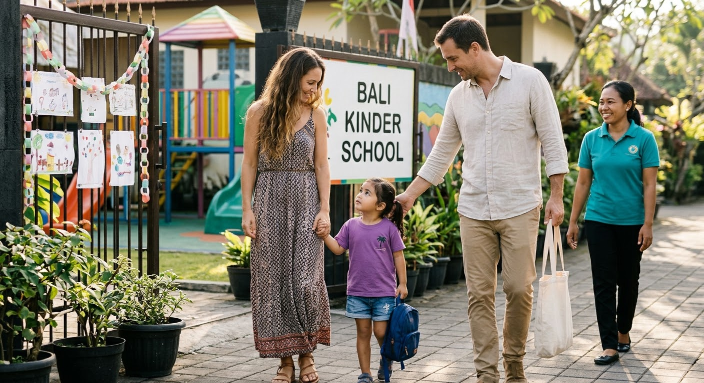

Kehidupan sekolah
Keseharian anak, dari pagi sampai pulang.
Gambaran umum pengalaman anak di sekolah anak usia dini.

Galeri kegiatan
Potret keseharian di sekolah.

Foto kegiatan resmi akan menggantikan ilustrasi.
Sementara itu, kegiatan terbaru dapat dilihat di Instagram resmi sekolah. Gambar di atas hanya ilustrasi konsep.
Buka Instagram SekolahNilai umum
Empat hal yang dicari dari keseharian anak.
Penjelasan umum tentang pendidikan anak usia dini, bukan klaim kegiatan khusus BGKS.
-
Rasa ingin tahu
Anak mengamati, bertanya, dan mencoba hal baru.
-
Kebersamaan
Bermain bersama melatih berbagi dan menunggu giliran.
-
Kemandirian
Kebiasaan sederhana yang membuat anak percaya diri.
-
Ekspresi
Warna, gerak, dan cerita sebagai cara menyampaikan perasaan.